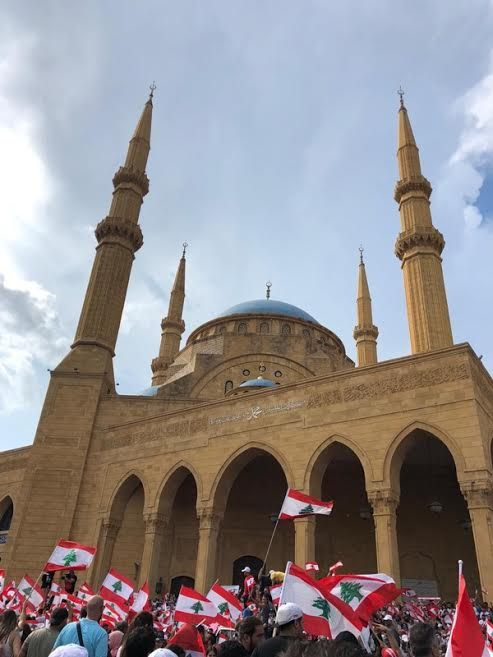

美·이란 정전 속 시아파 ‘아슈라’… 추모 행렬과 긴장 공존
미국과 이란의 정전 국면 속에 시아파 최대 애도 기간인 ‘아슈라’가 치러졌다. 거리에는 추모 행렬이 이어졌고, 충돌의 그림자 속에서도 종교 의례는 변함없이 이어졌다.
전금문 기자 · 2026.06.27
橋국제

정전 국면 속에 이슬람 시아파의 아슈라 애도 의식이 거행됐다고 聯合報가 사진과 함께 전했다. 아슈라는 시아파에게 깊은 종교적 의미를 지닌 추모 기간이다.
광고 문의 · 300×250거리에서는 검은 옷을 입은 신자들의 행렬과 애도 의식이 이어졌다. 최근의 군사적 긴장에도 불구하고 종교 공동체의 연례 의례는 예년처럼 치러졌다.
전문가들은 이런 종교 의례가 사회 결속과 정체성의 표현인 동시에, 외부 정세와 무관하게 이어지는 일상의 한 단면이라고 본다.
華橋時報는 타 종교·문화의 의례를 존중의 시선으로 전한다. 충돌과 긴장의 뉴스 속에서도, 사람들의 신앙과 일상이 이어지는 모습을 균형 있게 기록한다.